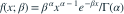

Gamma 总体密度为  已知。设 ，
已知。设 ， 。速率 MLE 的偏差为？
。速率 MLE 的偏差为？

， 已知。设 ，。速率 MLE 的偏差为？- A
- B
- C
- D0
我已思考，展开答案与解析
正确答案：B
- （第二参数为速率），所以 。
- 。
易错提醒Gamma 的速率与尺度互为倒数，必须按题设参数化计算。
JYSG · 432精选 · 册内清华大学432·2024年·五(1)；PDF第116页（印刷页114）
原大题拆解

， 已知。设 ，。速率 MLE 的偏差为？JYSG · 432精选 · 册内清华大学432·2024年·五(1)；PDF第116页（印刷页114）
原大题拆解